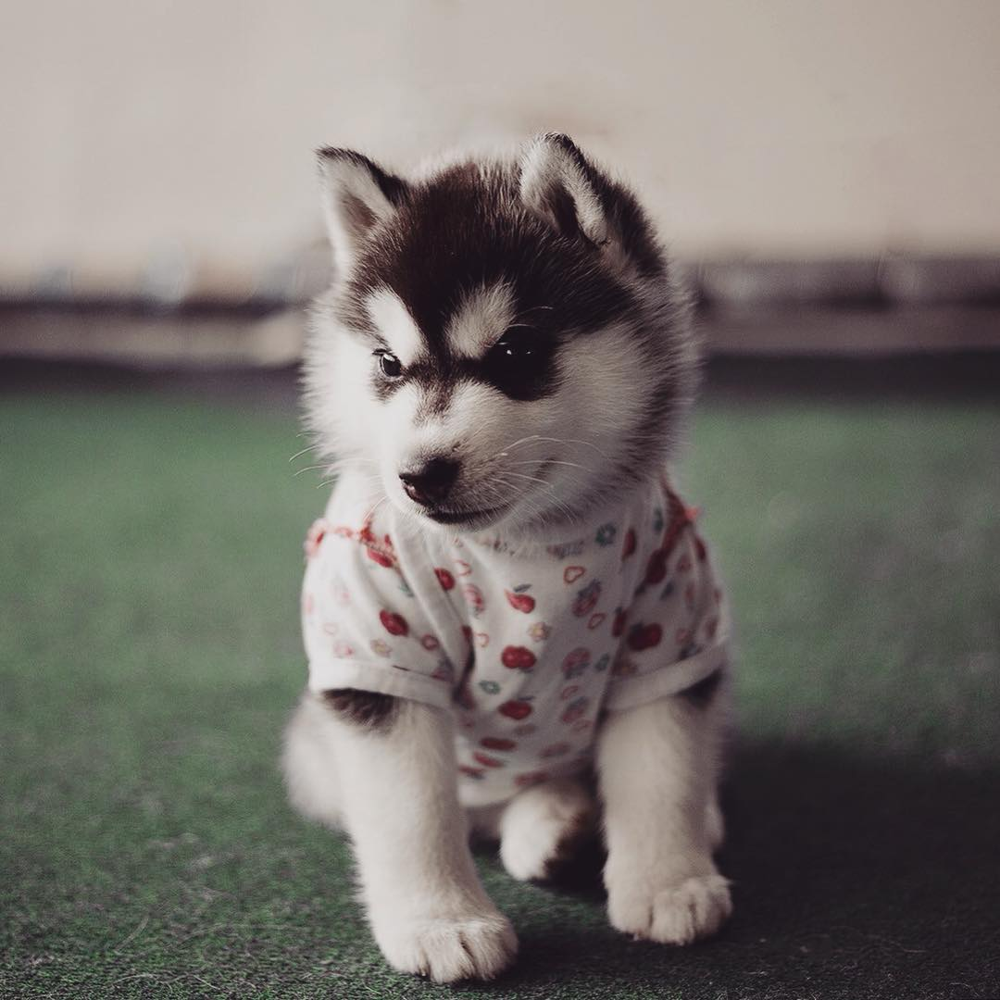
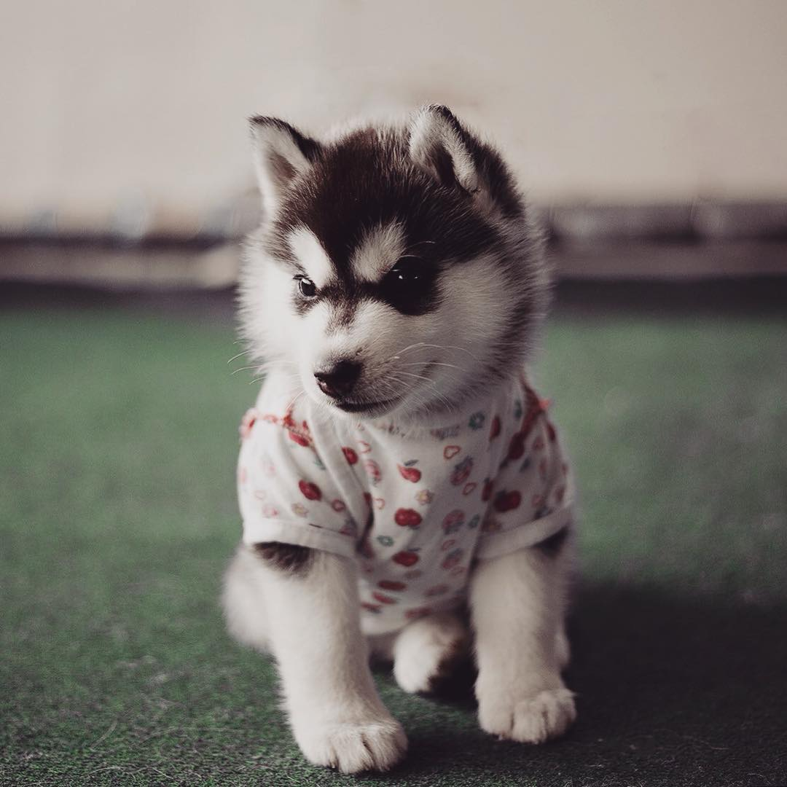
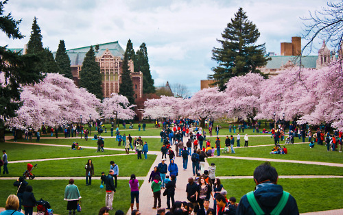
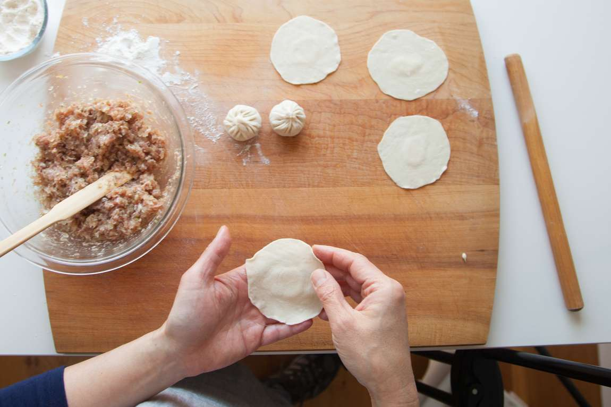

NEWBIE
The University of Washington (commonly referred to as UW, simply Washington, or informally U-Dub)[5] is a public research university in Seattle, Washington. Founded in 1861, Washington was first established in downtown Seattle approximately a decade after the city's founding to aid its economic development.
The University of Washington (commonly referred to as UW, simply Washington, or informally U-Dub)[5] is a public research university in Seattle, Washington. Founded in 1861, Washington was first established in downtown Seattle approximately a decade after the city's founding to aid its economic development.
 

Rotate Command.
APPRENTICE
February 5th, 2019 is this years Chinese New Year!
INFO101AF; 5:30-7:20pm
MASTER
A floated element
The image floats to the right of the text.

Academic preparation and achievement are some of the most important factors when it comes to holistic review, but we want to know more. What should we know about you that isn’t reflected in your grades and test scores? Where are you headed? What do you care about? We are excited to learn what you will bring to the UW community.Admission decisions are made only after all freshman applications have been reviewed. The UW does not participate in early decision or early action admission. *Winter quarter is not open to international freshman applicants. **Choosing summer means you wish to begin regular enrollment in the summer and continue into autumn as a degree-seeking student. For more information contact your Admissions Counselor. To apply for summer quarter as a non-degree student, contact Summer Quarter. The UW is a member of the Coalition for College, a diverse group of colleges and universities committed to making college a reality for all high school students. Learn more about the free college planning tools that help students learn about, prepare for, and apply to college. Also, see our step-by-step instructions on how to apply. We’re looking for students who will not only benefit from the academic and cultural opportunities available at the UW, but for students who will also contribute to our energy and diversity of experience. The entire application, including the essays and extracurricular activities, is important in the individualized review. We encourage you to use the application to share who you are and what is important to you. Learn more about holistic review.
